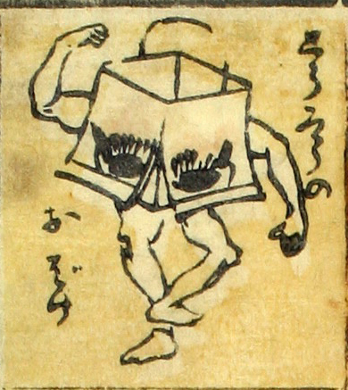

灯籠；トウロウ

灯篭のお化け。灯篭に描かれた模様が目玉のように見える。腕と脚が生えている。
著作者：芳盛／出典：親書誌：U426_nichibunken_0073：しん板化物尽し；シンパンバケモノヅクシ／日付：2006／資源識別子：U426_nichibunken_0073_0033_0000
Copyright (c)2010- International Research Center for Japanese Studies, Kyoto, Japan. All rights reserved.